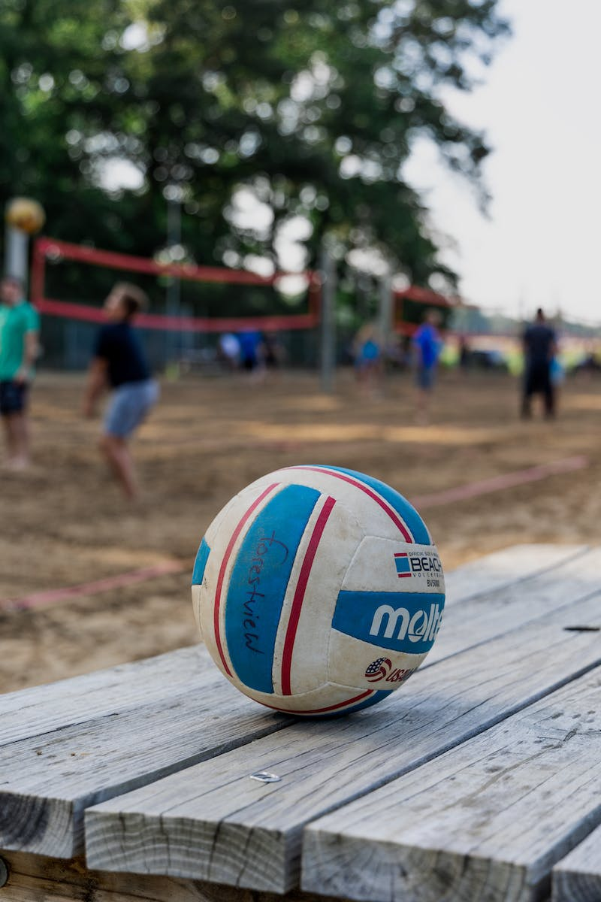
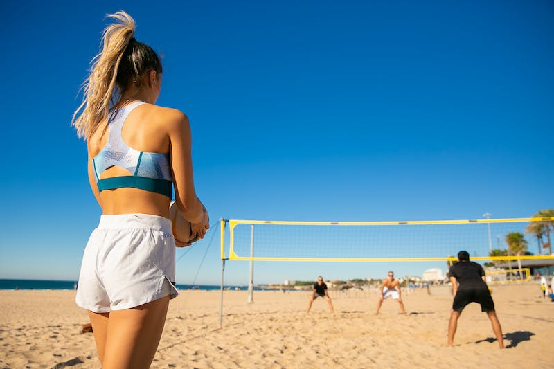
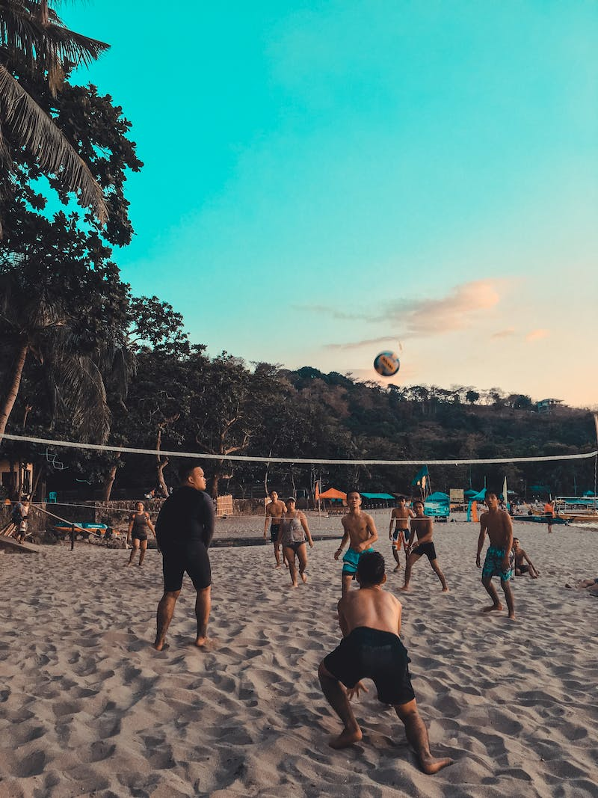
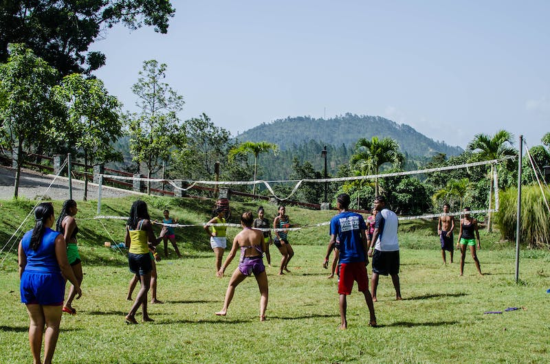

This webpage is all about volleyball, how, who, when did it start, all of it! I can't wait for you to learn all about my favorite thing.

This is what your average volleyball looks like.
Volleyball is a team sport and it can be played indoors, on a beach, or on a grass court. While indoor volleyball is the most common around the U.S. beach volleyball is quickly growing in popularity, while grass volleyball has a major lack of intrest. Volleyball while often though of as a women's sport is for all genders, there are men's, women's and co-ed teams across the nation.
Type of Volleyball |
Description |
Image |
Indoor volleyball |
Indoor Volleyball is typically played with six playes(can varry depending on your preference). There are club, rec, and schools teams for this version of the sport. | |
Beach Doubles |
Doubles beach volleyball is played withteams of two, and there are club, rec, and open tournaments for this sport. |  |
Beach Sixes |
Sixes Beach volleyball is playes with teams of six, THere are club, rec, and open teams for anyone interested. |  |
Grass Volleyball |
Grass volleyball can be played with teams of two, four, or six, depending on where you play. There are open teams and tournaments for grass volleyball. |  |
"Adversity, if you allow it to, will fortify you, and make you the best you can be" - Kerri Walsh Jennings
Phone: 654-298-7713
Email: wlbalogna@gmail.com